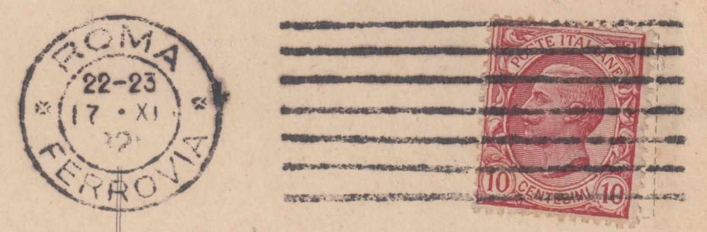
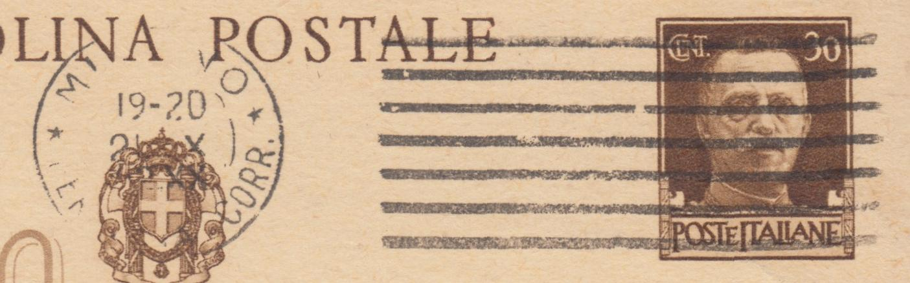
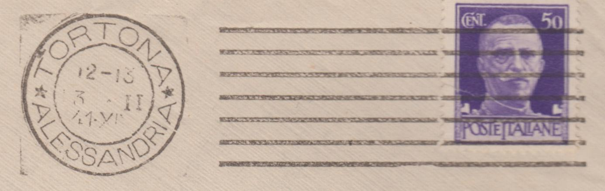
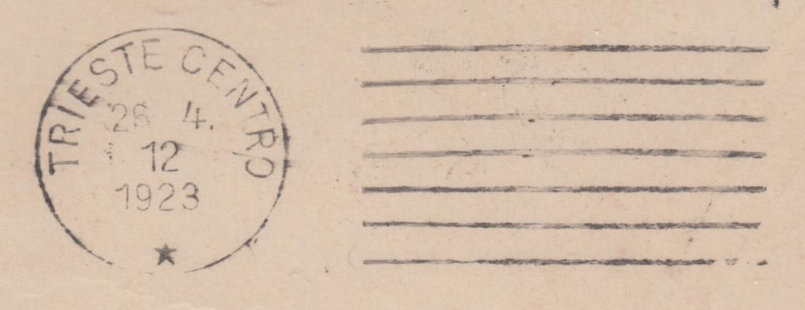

Gli annulli a barre sono stati usati in un numero relativamente limitato di uffici postali del Regno d'Italia. Una catalogazione puntuale dei differenti tipi porterebbe ad una lunga lista con differenze minime tra un tipo e l'altro, senza un reale valore aggiunto per il collezionista. Di seguito viene proposta una classificazione più generale che tiene conto di alcune caratteristiche principali degli annulli ad onde.




| Città | Ufficio | Barre |
|---|